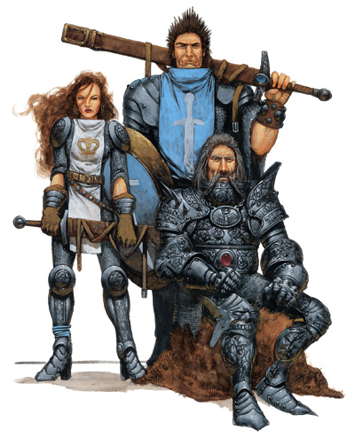

索兰尼亚骑士

左：皇冠骑士 中：圣剑骑士 右：玫瑰骑士
索兰尼亚骑士：
自梦幻的年代起，索兰尼亚骑士就已经作为一个武士组织为伸张正义而存在了。所有的骑士都要去履行一个誓言：Est Sularus oth Mithas（“荣誉即吾命”）。一个骑士一生的行为都将以骑士团的一部内容涵盖极其广泛的法典作为其衡量的标准。
在绝望的年代，出于受到大灾变中不公正的对待而产生的怨恨，人们开始比试所谓的骑士精神，不再信任骑士团。不仅如此，许许多多的骑士团成员也开始置他们的誓言于不顾，放任自流。然而在长枪战争中，几位勇敢忠诚的索兰尼亚骑士重新拾起了对骑士精神的忠贞，最终赢得了人们的尊敬，并最终在凡人的时代使骑士团恢复了往日的雄风。尽管之后不久，他们便在混沌之战中遭受了巨大的损失。
冒险：一个真正的骑士会将自己的一生奉献给骑士的誓言和守则：惩恶、扶弱。那些英勇而忠诚的骑士会得到他们应得的尊敬。许多骑士会被委以特别的任务，像守卫某一重地这样较之平凡的，或是像与一队牛头人骑兵正面冲突这样激动人心的。在绝望的年代，骑士的任务则可能会更加艰巨而危险，例如会卷入一段危险的旅程，或是去寻找某个价值非凡的上古神器。那些没有被托付以任务的骑士会寻找属于自己的冒险。一旦在冒险中赢得了荣誉，或实现了他们骑士守则的最高目标，他们同样会得到人们的赞颂。
特质：誓言和守则约束着每一个索兰尼亚骑士的行为：当面对危险时，他们他们会鼓起骑士无畏的气概；当面对危险时，他们会竭尽骑士最后的力量；当面对艰难的选择时，他们会受到骑士精神的引导。誓言和守则将引导一个骑士从事正义的事业，宣扬无上的法律（至少要与之信仰一致）。一个正直的骑士要无偿的帮助任何需要帮助的人。
一个角色所了解的有关骑士誓言和守则的知识取决于他们的知识（贵族与皇室）的技能等级。
阵营：一个索兰尼亚骑士必须是守序善良阵营。那些改变了阵营的骑士一旦被发现，便会被立即除名。索兰尼亚骑士团对法律以及对善良的衡量标准都十分严格。
宗教：灵魂之战后，奇力-乔里斯接替帕拉丁成为了索兰尼亚骑士所敬仰的神祉。但是，骑士们仍然会在记忆中对帕拉丁致以最高的敬意，并深深的信奉着 Walking God，Valthonis，因为他的牺牲行为体现了一种大无畏的精神。同时，骑士们也信仰着其他善良阵营的诸神。
背景：在那些数不清的历代中，索兰尼亚骑士团一直都只是从那些索兰尼亚贵族家庭的后代中吸收新生力量，并且对象往往是那些与骑士传统联系紧密的家庭（包括的姓氏诸如Brightblade,Crowguard和Tallbow等）。到了绝望的年代，由于人们对骑士团普遍失去了信任，这一点更是被充分的体现。当时很少有年轻人希望成为索兰尼亚骑士团成员，而那些来自骑士世家的年轻人则大多是依据传统被迫加入骑士团的。在经历了长枪之战后，骑士团开始向那些非索兰尼亚人以及那些没有贵族血统的人敞开大门，甚至允许他们晋升为高阶骑士。
种族：传统上，骑士团只允许人类加入。不过在长枪战争结束后，他们开始接受半精灵（无论如何，仍然很少见到）。骑士团有时也会例外的针对其他种族中的某些个体，给予他们荣誉称号，但不会承认他们是骑士团成员。
与其它职业的关系：因为训练有素的骑士之间往往能够合作得相当好，所以他们常常会成为一支混编部队中最具影响力的一部分。作为一个十分虔诚的团体，他们对善良阵营的牧师十分尊敬。同时也能同那些非邪恶阵营的战士和野蛮人之间形成良好的战友关系。在力量的年代和绝望的年代间（至长枪战争前），骑士并不信赖法师。但是在后来的时期中，他们接受了那些白袍法师并与之并肩作战，即使他们与那些施法者之间仍然保持着一段距离。当然，骑士们绝不会容忍那些邪恶或混乱的行为。
进阶规则：一个打算走上索兰尼亚骑士道路的角色有许多阶级可以选择，但首先他必须先成为一名皇冠骑士的侍从（见下面的边框），然后尽力去满足成为皇冠骑士的条件，最终进阶为皇冠骑士。作为一个皇冠骑士，他可以选择继续在皇冠骑士的道路上前进，或是去努力达到那些公式化的晋升要求，去晋升为一名圣剑骑士；同样的，此时他也可以选择保持其圣剑骑士的职业（以使其施法能力能够达到最大限度。），或是在其达到玫瑰骑士团的要求后，申请加入玫瑰骑士。
当一个角色加入一个新的骑士团体后，他便不能在其先前曾担任的索兰尼亚骑士职位上提升等级。例如：一个玫瑰骑士无法升级其皇冠骑士和圣剑骑士的职业。不过，他可以将自己曾经的骑士职业等级分配给其他职业，通常都是战士或牧师（比方说：一个20级的皇冠骑士，可能会转变成一个10级战士或牧师/10级皇冠骑士。）。
显然，这三个骑士团体都是建立在教阶制度的基础上的。因此，一个希望成为玫瑰骑士的的玩家必须先通过两个低阶的骑士团。然而，并不是每个骑士都会为登上骑士团的顶峰而不懈努力，也不是每个人都被允许成为最高阶骑士。相反的，有许多勇敢多才的人在皇冠骑士、圣剑骑士、甚至是普通骑士的职业上升满了20级。他们宁可去选择较低的骑士阶级，也不愿去参与骑士团最高阶级的竞争。但的确，这些在人数上三倍于最高阶骑士的团体都属于被统治阶级，一方面被玫瑰骑士统治，另一方面也被这三个骑士团体内部的骑士代表所统治着。
帘幕之后：骑士精神
加入圣剑骑士团或玫瑰骑士团的要求中包括着特殊的、长长的一项，它被叫做骑士精神。这条要求是具体这样规范的：骑士团成员必须要做到保证它的每一个行为都符合索兰尼亚骑士的荣誉与道德，服从与他们的誓言与守则。某种程度上说，这些行为的指导方针是传统而含糊的。在这个游戏世界里面，认证一个骑士的思想是否高尚的考核内容是有骑士团议会自由选择的。而在游戏本身中，这个选择权则在DM手中。一些喜欢保留游戏详细纪录的玩家此时会认真的检查他们曾经记录的有关骑士智慧考核的内容，然后在骑士团议会之前请那些曾经目击过骑士考核的玩家帮助他进行一次针对自己的考前全面训练。而那些被请求的玩家则最好对整个训练过程尽量地加以掩饰并为他假定一套方案，直到帮助他达到那些硬性的要求（基础攻击加值、专长等）以及完成那些分配的任务为止。在训练过程中，任何的建议都是好的。
对每一个进阶职业来说，那些公式化的先决条件都有着明确的评估标准，是很容易去判决的。因此游戏里进行的骑士资格审核中，会失败也是很正常的。不过如果你热衷于扮演索兰尼亚骑士，你可以同DM商量适当调整一下对你的骑士进阶审核要求的严格程度，并尽可能的达成共识。以便让你无论决定是要承担那些艰难的任务还是接下一些较为轻松的职责，只要满足了那些决提条件，你的进阶之路都会进展的十分顺利。
前索兰尼亚骑士：任何一个脱离守序善良阵营、蓄意犯恶或违背其誓言与行为守则的索兰尼亚骑士，将会失去所有特殊能力与法术。这些行为一旦被查到发生在某个骑士身上，那么他必须将面对骑士团议会的审判，轻则被判剥夺其骑士职业，开除出骑士团；重则会判其自裁（以剑自刎）。骑士团允许那些误入歧途的骑士赎罪（请见《玩家手册》中“赎罪术”说明。）。
皇冠骑士
皇冠骑士是最低阶的索兰尼亚骑士。这些训练有素的战士忠诚而恭顺，他们用骑士那种高贵的方式向敌人发起致命的冲锋。
皇冠骑士通常要比高阶骑士更为年轻，他们总是渴望接受任务和挑战。皇冠骑士的规章教导他们用智慧引导自己的长剑，用恭顺对待自己的上级。
生命骰：d10
进阶要求：
想要进阶一名皇冠骑士，角色必须满足以下条件。
阵营：守序善良
基础攻击加值：+3
基础豁免加值：坚韧+4
技能：交涉2级，知识（宗教）2级，骑乘2级
专长：擅长重型防具，荣誉羁绊（Honor-bound），擅长军用武器（任意一种），擅长盾牌。
特殊：皇冠骑士的侍从，角色必须是一名皇冠骑士的侍从（见前文，皇冠骑士的侍从）。
本职技能：
皇冠骑士的本职技能（以及技能的关键属性）为：手艺（智力），交涉（魅力），威吓（魅力），知识（皇室贵族）（智力），知识（宗教）（智力），专业（感知）以及骑乘（敏捷）。
每等级技能点数：2+智力调整值
表2-5 皇冠骑士
等级 基本攻击加值 坚韧豁免 反射豁免 意志豁免 特殊
1 +1 +2 +0 +0 荣誉力量每日1次，骑士勇气
2 +2 +3 +0 +0 英雄先锋+1
3 +3 +3 +1 +1 战斗至死
4 +4 +4 +1 +1 意志高尚，荣誉力量每日2次
5 +5 +4 +1 +1 英雄先锋+2
6 +6 +5 +2 +2 强化荣誉力量
7 +7 +5 +2 +2 重装机动，荣誉力量每日3次
8 +8 +6 +2 +2 英雄先锋+3
9 +9 +6 +3 +3 勇气灵光
10 +10 +7 +3 +3 骑士之冠，荣誉力量每日4次
以下是皇冠骑士的职业特性：
擅长武器及防具：皇冠骑士擅长使用所有简单武器和军用武器，但不擅长额外的防具和盾牌。
荣誉力量（SU）：每日一次，1级的皇冠骑士的力量可以获得+4的士气加值，持续轮数相当于3+角色的魅力调整值。角色每提升3级，可以获得额外的荣誉力量使用次数（4级时每日2次，7级时每日3次，10级时每日4次），启动本能力需要一个即时动作。
骑士勇气（SU）：皇冠骑士在对抗恐惧效果时，可以将自己的魅力调整值（若正）作为士气加值。
英雄先锋（EX）：从2级开始，皇冠骑士在先攻检定上获得+1的加值，之后角色每提升3级，本奖励提高+1（5级时+2，8级时+3）。
战斗至死（EX）：3级时，皇冠骑士获得涉死顽强（Diehard）作为额外专长，即使角色不具备先决条件。
意志高尚（SU）:4级的皇冠骑士在对抗精神魔法时，可以把自己的魅力调整值作为士气加值附加在所有检定上。角色对于荣誉以及骑士团的执念增强了自己的意志。
强化荣誉力量（SU）：从6级起，皇冠骑士在使用荣誉力量时，奖励由+4提高至+6。
重装机动（EX）：7级的皇冠骑士在穿着重型防具时，在奔跑速度以及其他效果上视为中型防具。同时，角色穿着重型防具时的防具惩值降低1点，本奖励可以与精致防具以及龙铁（Dragonmetal）防具所带来的奖励叠加。
勇气灵光（SU）：9级的皇冠骑士对恐惧效果完全免疫，同时距角色10尺内的队友在对抗恐惧效果时获得+4的豁免奖励。本效果需要皇冠骑士在有意识时才能产生作用，若角色失去意识或死亡，本效果立即消失。
骑士之冠（SU）：10级的皇冠骑被视为荣誉，恭顺和忠诚的代言人，角色可以将自己的魅力调整值作为士气加值附加到所有豁免检定上，并在对抗精神效果时再获得+4的奖励（本奖励取代意志高尚的效果）。此外，他可以每日一次选择处在“英灵勇气”的效果下，使攻击骰，伤害骰和豁免骰获得+4的士气加值，同时获得 15点临时生命，本效果持续时间为10分钟。
皇冠骑士的职责
皇冠骑士必须为其他正在执行任务的索兰尼亚骑士提供自己力所能及的帮助，并忠于最高骑士会（Grand Circle of Knights）的忠诚名单（List of Loyalty）上列出的所有国家。若未能完成这些使命，骑士的荣誉将被打上问号，并有可能丧失骑士资格。
皇冠骑士规章
皇冠骑士认为忠诚和恭顺是一名骑士最重要的品质。忠诚包括无条件执行上级的命令，只要他们的行为符合骑士信条并且尊重骑士规章。忠于自己的家人，忠于被邪恶压迫的人们，忠于那些为骑士评议会所承认的合法君主。这就是骑士们最基本的信念，也是最值得守护的精神。
符合皇冠骑士身份的行为包括：
·无条件服从骑士评议会中上级所下达的命令。
·忠于骑士规章。
·忠于其他索兰尼亚骑士。
·其他能够团结索兰尼亚骑士的行为。
皇冠骑士侍从：
所有希望加入索兰尼亚骑士团的角色首先都要以一名皇冠骑士侍从的身份加入索兰尼亚骑士团（无论等级、职业，任何角色都可以申请成为一名侍从。），从此便开始了他们道德品质的考察时期。作为索兰尼亚骑士的候选人，他们必须出席骑士评议会并宣誓会坚定其所为一名索兰尼亚骑士的立场，效忠于骑士团的行为规范，并立下重誓要将骑士团的誓言和准则作为自己生命的一部分来对待。
评议会上，若议会成员均无异议或再无任何有关候选人荣誉感的问题可提，那么这名候选人便可以作为侍从被骑士团接收。任何内容的问题都有可能再评议会上被提出。如果候选人能够合理的解答这个问题，便会顺利被录取；但若是提出的问题在评议会当场被发觉是有理可依的，骑士候选人的解释便要继续深入论点直至议会成员满意为止。
在考察时期，侍从角色一旦升了一级（在任意职业上)或是满足了成为皇冠骑士的一切要求，该角色便可以向骑士评议会递交申请，申请正式加入骑士团。
圣剑骑士
圣剑骑士依靠力量和信念守护真理和正义。他们在自己的灵魂深处找到勇气，因此可以随时准备奉献，甚至是牺牲生命。圣剑骑士是善良力量中的菁英。
奇力·乔里思赐予圣剑骑士使用神术的力量，使他们能在战斗中消灭危险的敌人，以及保护那些需要保护的人们。不过即使圣剑骑士无法施展魔法，他们的信念和勇气也足以令人生畏。
生命骰：d8
进阶要求：
想要进阶一名圣剑骑士，角色必须满足以下条件。
阵营：守序善良
基础攻击加值：+6
基础豁免加值：意志+4
技能：知识（皇室贵族）2级，知识（宗教）4级，骑乘4级
专长：涉死顽强，坚韧，荣誉羁绊
法术：角色必须能够施展1级神术
特殊：想要成为一名圣剑骑士，角色必须拥有皇冠骑士等级以及骑士勇气这项能力。
骑士德行：只有表现优秀的皇冠骑士才能被圣剑骑士接纳，并最终成为其中的一员。在进阶皇冠骑士后，角色必须展现出良好的德行，并严格遵守骑士规章和骑士信条。除此之外，在向骑士评议会申请进阶圣剑骑士前，角色还必须在证人的监督下完成以下七项任务。
·路程不低于500英里，时间不低于30天的旅行
·三次有关智慧的试炼
·一次有关慷慨的试炼
·一次有关怜悯的试炼
·弥补一项过失
·一次与邪恶的公平对决（对方的挑战等级不得比角色职业等级低2级以上）
·一项能够体现出善良和荣誉的英勇举动
当角色认为时机恰当时，可以在骑士评议会上讲述自己的事迹。若角色得到首席圣剑骑士（Lord Knight from the Order of Sword）的认可，则可以成功进阶圣剑骑士。若首席圣剑骑士因故未能出席，则由出席者中最高阶级的圣剑骑士决定。若由于某种原因无法举行骑士评议会，则进阶事宜必须延后处理。若骑士认为自己在申请进阶时受到不公正待遇，可以直接向最高评议会（Presiding Council of the Knights）申诉。
本职技能：
圣剑骑士的本职技能（以及技能的关键属性）为：专注（体质），手艺（智力），交涉（魅力），威吓（魅力），知识（皇室贵族）（智力），知识（宗教）（智力），专业（感知）以及骑乘（敏捷）
每等级技能点数：2+智力调整值
表2-6 圣剑骑士
等级 基本攻击加值 坚韧豁免 反射豁免 意志豁免 特殊 法术
1 +0 +2 +0 +2 破邪斩每日1次，善良灵光 施法者等级+1
2 +1 +3 +0 +3 驱散不死生物 施法者等级+1
3 +2 +3 +1 +3 勇气灵光 施法者等级+1
4 +3 +4 +1 +4 施法者等级+1
5 +3 +4 +1 +4 破邪斩每日2次 施法者等级+1
6 +4 +5 +2 +5 施法者等级+1
7 +5 +5 +2 +5 施法者等级+1
8 +6 +6 +2 +6 施法者等级+1
9 +6 +6 +3 +6 施法者等级+1
10 +7 +7 +3 +7 破邪斩每日3次，骑士之魂 施法者等级+1
职业特性：
以下是圣剑骑士的职业特性：
擅长武器及防具：圣剑骑士不擅长任何额外武器和防具。
法术：当圣剑骑士升级时，可以获得新法术，如同角色进阶前的神术施法者等级同时提升。角色只能提高施法能力，而不能获得先前职业的其他好处（增进驱散或斥喝不死生物能力、超魔或制造物品专长等）。若角色在进阶前拥有多个神术施法者职业，则必须选择要将升级的圣剑骑士等级加在哪一种职业上，以决定新的每日法术数量。奇力·乔里思赐予圣剑骑士使用神术的能力。
破邪斩（SU）：每日一次，圣剑骑士可以尝试在普通近程攻击中使用破邪斩。角色的魅力调整值（若有）作为奖励附加在攻击骰上，并造成相当于每等级1点的额外伤害。若圣剑骑士将此能力施展在非邪恶的生物上，则不产生任何效果，但仍消耗角色当日所能施展的破邪斩次数。当圣剑骑士达到5级和10级时，可以如上表所示获得额外的破邪斩次数。
善良灵光（EX）：圣剑骑士善良灵光的效果（见“侦测善良”法术的相关说明）等同于角色的圣剑骑士等级附加角色的牧师等级或秘术师等级。
驱散不死生物（SU）：当圣剑骑士达到2级时，可以获得驱散不死生物的能力。角色每日可以尝试驱散不死生物的次数等同于3+圣剑骑士的魅力调整值，驱散效果相当于比角色的圣剑骑士等级低1级的牧师。若角色在进阶前已拥有牧师等级，则以角色的牧师等级+圣剑骑士等级-1作为牧师等级来决定驱散效果。角色不能因此获得额外的驱散次数。
勇气灵光（SU）：当圣剑骑士达到3级时，角色在对抗恐惧效果时，可以在豁免检定上获得+4的士气加值。同时，角色10尺内的队友也可以在本类检定上获得同样的加值。
骑士之魂（SU）：10级的圣剑骑被视为虔诚和善良的代言人。在计算邪恶外界生物的伤害减免时，角色所使用的武器视为神圣武器。同时，角色可以每日一次选择处在“圣洁灵光”的效果下，持续时间10轮。本效果只影响圣剑骑士本人，而不包括其队友。
圣剑骑士的职责
圣剑骑士每日必须向奇力·乔里思以及其他善良神祉祷告，在战斗中消灭邪恶（决不因敌人的力量而退却），保护手无寸铁的弱者，不误用骑士的力量。
圣剑骑士规章
圣剑骑士是善良的战士，崇拜英雄和勇者。英雄可以为自己的信念作出奉献，英雄的行为包括：
·保护弱者
·富裕百姓
·解放奴役
·帮助被误解者获得清白
·维护手无寸铁的人们
·帮助其他骑士
勇者可以随时准备在正义的战斗中牺牲生命。勇者的行为包括：
·在面对邪恶时无所畏惧
·守护自己的荣誉
·守护索兰尼亚骑士的荣誉
·保护弱者
玫瑰骑士
玫瑰骑士是最高阶的索兰尼亚骑士。在智慧和公义的指导下，这群高贵而勇敢的骑士是安塞隆大陆荣誉的象征。
玫瑰骑士组成了索兰尼亚骑士的领导阶层。在战争中，他们负责决定战略，领导部队和鼓舞军心。对于克莱恩世界上的其他政府组织而言，玫瑰骑士则是良好的外交使者和咨政。
生命骰：d10
进阶要求：
想要进阶一名玫瑰骑士，角色必须满足以下条件。
阵营：守序善良
基础攻击加值：+8
基础豁免加值：意志+7
技能：交涉8级，知识（皇室贵族）8级，骑乘8级
专长：坚韧，荣誉羁绊，领导，骑乘战斗
法术：角色必须能够施展2级神术
特殊：想要成为一名玫瑰骑士，角色必须拥有皇冠骑士等级和圣剑骑士等级，同时，角色还必须拥有骑士勇气以及勇气灵光这两项能力。
骑士德行：只有表现优秀的圣剑骑士才能被玫瑰骑士接纳，并最终成为其中的一员。在进阶圣剑骑士后，角色必须展现出良好的德行，并严格遵守骑士规章和骑士信条。除此之外，在向骑士评议会申请进阶玫瑰骑士前，角色还必须在证人的监督下完成以下六项任务。
·路程不低于500英里，时间不低于30天的旅行
·一次有关智慧的试炼
·三次有关慷慨的试炼
·三次有关怜悯的试炼
·弥补一项过失
·一次与邪恶的公平对决（对方的挑战等级不得低于角色职业等级）
当角色认为时机恰当时，可以在骑士评议会上讲述自己的事迹。若角色得到全体出席者的认可，则可以成功进阶玫瑰骑士。若由于某种原因无法举行骑士评议会，则进阶事宜必须延后处理。若骑士认为自己在申请进阶时受到不公正待遇，可以直接向最高评议会申诉。
本职技能：
玫瑰骑士的本职技能（以及技能的关键属性）为：手艺（智力），交涉（魅力），威吓（魅力），知识（皇室贵族）（智力），知识（宗教）（智力），专业（感知）以及骑乘（敏捷）
每等级技能点数：2+智力调整值
表2-7 玫瑰骑士
等级 基本攻击加值 坚韧豁免 反射豁免 意志豁免 特殊 法术
1 +1 +2 +0 +2 鼓舞军心，侦测邪恶，善良灵光 施法者等级+1
2 +2 +3 +0 +3 激发勇气+2每日两次 施法者等级+1
3 +3 +3 +1 +3 领导奖励+1，神恩 施法者等级+1
4 +4 +4 +1 +4 激发潜能，驱散不死生物 施法者等级+1
5 +5 +4 +1 +4 激发勇气+3每日三次 施法者等级+1
6 +6 +5 +2 +5 规章的智慧 施法者等级+1
7 +7 +5 +2 +5 领导奖励+2 施法者等级+1
8 +8 +6 +2 +6 激发勇气+4，每日四次 施法者等级+1
9 +9 +6 +3 +6 最终圣战 施法者等级+1
10 +10 +7 +3 +7 骑士之花 施法者等级+1
职业特性：
以下是玫瑰骑士的职业特性：
擅长武器及防具：玫瑰骑士不擅长任何额外武器和防具。
法术：当玫瑰骑士升级时，可以获得新法术，如同角色进阶前的神术施法者等级同时提升。角色只能提高施法能力，而不能获得先前职业的其他好处（增进驱散或斥喝不死生物能力、超魔或制造物品专长等）。若角色在进阶前拥有多个神术施法者职业，则必须选择要将升级的玫瑰骑士等级加在哪一种职业上，以决定新的每日法术数量。奇力·乔里思赐予玫瑰骑士使用神术的能力。
鼓舞军心（SU）：每日三次，玫瑰骑士可以在战斗中大喝一声（视为个即时动作），使60尺内所有队友在下一次行动中基本速度得到5尺提升，不仅如此，队友还在下一次攻击骰上获得+1的士气加值。本能力属于精神作用，只影响能够听到骑士大喝的生物。
侦测邪恶（SP）：玫瑰骑士可以随意施展侦测邪恶，效果如同名法术。
善良灵光（EX）：玫瑰骑士善良灵光的效果（见“侦测善良”法术的相关说明）等同于角色的玫瑰骑士等级附加角色的圣剑骑士等级再附加角色的牧师等级或秘术师等级。
激发勇气（SU）：当玫瑰骑士达到2级时，可以每日两次激发队友的勇气（包括角色本人），使他们在战斗中发挥强大的力量。目标必须能够听到角色的演讲才能受到本能力的影响，效果持续至骑士停止演讲后5轮。演讲中的骑士可以正常战斗，但不能施展法术，使用魔法物品（如卷轴）完成法术，或用语言启动魔法物品（如魔杖）。受本能力影响的目标在对抗媚惑和恐惧效果时，豁免检定得到+2的士气加值，同时，目标的攻击检定和伤害检定获得+2的士气加值。当玫瑰骑士达到5 级和8级时，本奖励再次得到+1的提升。本效果属于精神作用。
领导奖励：当玫瑰骑士达到3级时，角色的领导能力获得+1的奖励。当角色达到7级时，本奖励提高至+2。本效果可以于阵营或角色的个人声望所带来的领导奖励叠加。
神恩（SU）：当玫瑰骑士达到3级时，角色在豁免检定上附加魅力调整值。
激发潜能（SU）：当玫瑰骑士达到4级时，可以激发30尺内一名队友的潜能，使目标获得更强大的力量。此后每提升3级，本能力可以影响一名额外目标。使用本能力将消耗骑士激发勇气的每日使用次数。想要激发潜能，骑士必须发表演讲（如同激发勇气），而目标则必须能够听到角色的演讲，效果持续至骑士停止演讲后5 轮。受本能力影响的目标可以获得两个10面临时生命骰数（在计算临时生命时需附加目标的体质调整值），同时，目标在攻击检定和伤害检定上获得+2的能力加值，在坚韧检定上获得+1的能力加值。在计算诸如“睡眠术”的效果时，临时生命骰视同正常生命骰。骑士可以对自己使用激发潜能，本效果属于精神作用。
驱散不死生物（SU）：在计算驱散不死生物的效果时，玫瑰骑士可以将自己的玫瑰骑士等级减3附加在其牧师等级（包括角色的圣剑骑士等级-1以及其他牧师等级）上。
规章的智慧（EX）：当玫瑰骑士达到6级时，由于角色掌握了大量有关索兰尼亚骑士规章的知识，因此可以从骑士规章中寻求指导。每日两次，角色可以尝试进行皇室贵族知识检定（DC 14），检定成功的效果如同等级牧师所施展的“卜筮术”。由本能力得出的结果必须属于历史记录，寓言或法典等骑士规章中的内容。
最终圣战（SU）：当玫瑰骑士达到9级时，可以每日一次用神圣的目标鼓舞军队的斗志，从而暂时增强士兵的活力。骑士10尺内的队友可以因此获得2d10点临时生命。本效果能够影响的生物数量上限以及持续轮数等同于角色的职业等级+角色的魅力调整值。
骑士之花（SU）：10级的玫瑰骑被视为索兰尼亚骑士所追求的终极目标：充满荣誉，智慧和公义。角色对胁迫效果完全免疫（无害效果，诸如“援助术”除外）。同时，角色可以每日一次运用骑士规章中的智慧，选择处在“预警术”的效果下，持续时间100分钟。角色只能对自身施展本效果。当角色处在“预警术”的效果下，不会措手不及或被突袭，并且在防护等级和反射检定上获得+2的洞察加值。
玫瑰骑士的职责
玫瑰骑士必须随时随地光耀正神，执行公义而不记自身安危，永远不与邪恶妥协，为了荣誉牺牲一切。
玫瑰骑士规章
玫瑰骑士追求荣誉，公义和智慧。荣誉要求骑士忠于自己的誓言，并不惜一切代价为正义而战。公义是骑士规章的核心，也是玫瑰骑士的灵魂。公义要求骑士公平对待每个人，每个生物，甚至是每名神祉。
符合玫瑰骑士身份的行为包括：
·同情不幸者
·舍己救人
·守护骑士的资格
·守护其他骑士的性命
·不使任何生命白白牺牲
|